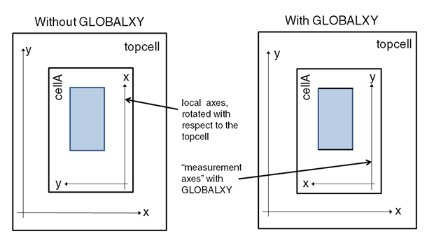

DFM Property
Layer operation
License: Calibre nmDRC-H
Associates user-defined properties to individual objects on the input layer and creates a derived layer containing only those objects that meet the specified criteria.
Usage
DFM PROPERTY primary_layer [secondary_layer …]
[INTERSECTING
| {OVERLAP [ABUT ALSO [SINGULAR]] [EXACT] [MULTI | NOMULTI]
[NOPUSH] [REGION] [UNMERGED]}
| {NODAL [MULTI | NOMULTI] [NOPUSH]}
]
[PRESERVE]
[CORNER]
[CONNECTED | NOT CONNECTED]
[INSIDE OF x1 y1 x2 y2] …
[GLOBALXY]
[SPLIT [ALL | PRIMARY] ]
[ [ACCUMULATE [ONLY]] BY NET [ONLY] [NOHIER] [NOPSEUDO] ]
[BY CELL [ONLY] [NOHIER] [NOPSEUDO] ]
[DBU]
[property_definition …]
where property_definition is
'[' property_name = expression ']' [ ['!'] constraint]…
Arguments
- primary_layer
A required argument supplying the name of an original or derived layer containing the data to which properties are added. Data from this layer that meets the criteria of this operation is written to the result layer. This layer can be a polygon layer, an edge layer, or an error layer edge cluster. Edge and error layers can be unmerged.
- secondary_layer
An optional argument used to specify an additional layer for consideration when calculating and assigning properties to layout objects on the primary_layer. Any layer other than the primary_layer that is referenced in any expression for the operation must be specified as a secondary_layer. Any number of secondary_layer arguments is allowed.
When secondary_layer arguments are specified, the operation first creates associations between the layout objects on a secondary_layer and those on the primary_layer by grouping them together into clusters. Each cluster contains exactly one layout object on the primary_layer, and a number of layout objects on each secondary_layer that is controlled by the specified clustering mode.
When a secondary_layer is supplied, the allowed layer types are governed by the method used for assembling clusters:
When INTERSECTING is specified, the primary_layer and all secondary layers must be polygon layers.
When OVERLAP is specified, there are no constraints on the layer types for any input layer. That is, any combination of input layers of any type is supported.
See “Clustering Methods in DFM Property” and the keywords INTERSECTING, OVERLAP, and NODAL for details on the clustering methods.
- INTERSECTING | {OVERLAP [ABUT ALSO [SINGULAR]] [EXACT] [MULTI | NOMULTI] [NOPUSH] [REGION] [UNMERGED]} | {NODAL [MULTI | NOMULTI] [NOPUSH]}
An optional keyword set used to control how the operation assembles clusters associating data on secondary layers with data on the primary_layer. See Figure 3 for a figure illustrating each clustering method.
INTERSECTING — A cluster is defined to be a polygon on the primary_layer, plus all secondary_layer polygons that overlap that polygon. secondary_layer polygons that partially overlap the primary_layer polygon are clipped by the primary layer so that only the portions that overlap the primary_layer are used in the calculations. This clustering method applies only to polygon layers, and is the default behavior.
OVERLAP — A cluster is defined to be a layout object on the primary_layer plus all layout objects on a secondary_layer with which it has a non-zero area of overlap. The secondary_layer layout objects that partially overlap the primary_layer layout object are not clipped.
For edge layers, secondary layer edges that are collinear with the primary layer object are considered part of the cluster. For error layer edge clusters, if any edge is collinear with the primary layer object, the error edge cluster is considered part of the cluster. See the section “Measurement Function Behavior at Boundaries in DFM Property”.
ABUT ALSO — Optional secondary keyword that includes secondary_layer layout objects that abut the primary_layer layout object, as well as those that overlap it.
SINGULAR — Optional secondary keyword that instructs the operation to consider point interaction of edges when grouping geometries on primary and secondary layers. This keyword can only be specified with ABUT ALSO. If SINGULAR is specified, then two edges, primary and secondary, that share only a single point that is the end point of one or both edges, are considered interacting. Similarly, a primary layer polygon and an edge that share only a single point are considered interacting if this keyword is specified. The results of this keyword are not valid for polygon-to-polygon interactions.
EXACT — Optional secondary keyword that causes only identical geometries to be clustered together. Identical geometries must be pointwise equivalent—edges must match, have the same orientation, and be in the same location.
All input layers must be the same type if EXACT is specified. If the output layer from a DFM Property Singleton operation is used as a secondary_layer, the primary_layer must be a polygon layer.
EXACT cannot be specified with REGION.
MULTI and NOMULTI — Optional secondary keywords that control how the operation treats a layout object on the secondary_layer that overlaps or abuts more than one primary_layer layout object. By default, when a polygon on the secondary_layer can be grouped into several clusters, the operation assigns the layout object to one of these clusters arbitrarily and a warning is issued in the transcript. Specifying either MULTI or NOMULTI overrides the default behavior as follows:
MULTI — When specified, the operation assigns such a secondary_layer layout object to the cluster for each polygon it overlaps or abuts.
NOMULTI — When specified, the layout object is assigned to one of these clusters arbitrarily but no warning is issued in the transcript. That is, NOMULTI suppresses the ambiguous clustering warning.
NOPUSH — Optional secondary keyword that instructs the operation to report the DFM Property results in the cell where the clustering occurred and the property values were calculated. See “Promotion and Push-Down”.
REGION — Optional secondary keyword that controls how the operation treats error edge cluster data for the purpose of forming clusters. This keyword provides a more flexible interpretation of “overlap”. Without it, only the overlap of edges is considered. When specified, the operation treats error data as if the error clusters formed polygons:
Error clusters with two parallel edges are treated as if they formed trapezoids with vertices located in the endpoints of the edges.
All other error clusters are treated as if they were a polygon formed by their convex hulls.
UNMERGED — Optional secondary keyword that enables unmerged polygon layers as input layers. If the primary_layer is an unmerged polygon layer, the output layer is also unmerged.
Unmerged polygon layers can be processed by a limited number of operations; see “Unmerged Polygon Layers” in the Calibre Verification User’s Manual.
NODAL — An optional keyword that clusters objects based upon node numbers. Connectivity information is required on the input layers to use this option. Note that NODAL clustering is not compatible with the CONNECTED and NOT CONNECTED options, since all geometries grouped together by NODAL clustering must be connected.
A NODAL cluster is defined to be a layout object on the primary_layer plus layout objects on any secondary_layer that have the same node number as the primary_layer object. The spatial relations between objects are ignored. NODAL clustering is supported only for polygon and edge layers.
If a secondary_layer object has the same node number as more than one primary_layer object, by default the secondary_layer object is arbitrarily assigned to one cluster, and a warning about ambiguous clustering is issued. The optional MULTI and NOMULTI keywords change the default behavior.
MULTI — An optional keyword which specifies that a secondary_layer object that has the same node number as more than one primary_layer object can belong to more than one cluster. When NODAL MULTI is specified, the operation assigns such a secondary_layer object to each primary_layer object having the same node number. No notice is given in the transcript.
NOMULTI — An optional keyword that suppresses the ambiguous clustering warning with the default NODAL behavior. That is, if a secondary_layer object has the same node number as more than one primary_layer object, the secondary_layer object is arbitrarily assigned to one cluster, but no warning about ambiguous clustering is issued.
NOPUSH — Optional secondary keyword that instructs the operation to report the DFM Property results in the cell where the clustering occurred and the property values were calculated. See “Promotion and Push-Down”.
- PRESERVE
An optional keyword that causes DFM properties on the primary_layer to be copied to the output layer. However, a property from the primary_layer is not copied if a property of the same name is defined in the property_definition.
When all properties from the primary_layer need to be copied to the output layer, PRESERVE is more efficient than explicitly copying each property with the property access functions, such as PROPERTY, NETPROPERTY, and so forth. See “Example 10”.
- CORNER
An optional keyword used to control how the operation treats edge clusters produced by Calibre nmDRC measurements between corners of rectangles aligned to the x and y axes. Because Calibre nmDRC measurements operate on edges, measurement between corners produces two errors, that is two pair of edges, rather than one. This can result in faulty error counts because each corner is counted twice.
Using this keyword instructs the operation to retain only one of the edge clusters produced from Calibre nmDRC measurements of corners of rectangles. The operation selects the edge pair to retain that, if converted to a polygon, would have the larger area.
Figure 1. DFM Property CORNER
This keyword is meaningful only when used with edge clusters, and is valid only with a single layer operation. It affects only parallel edge clusters as shown in the preceding figure. Perpendicular edge clusters are unaffected.
- CONNECTED | NOT CONNECTED
An optional keyword choice that controls connectivity filters for clustering geometries on multiple layers. The operation must have at least two input layers and all input layers must have connectivity information.
CONNECTED — Only geometries on secondary layers that belong to the same net as the geometry on the primary layer are clustered with that geometry.
NOT CONNECTED — Only geometries on secondary layers that do not belong to the same net as the geometry on the primary layer are clustered with that geometry.
Other geometric requirements for clustering, such as intersection or overlap, must still be met.
The CONNECTED and NOT CONNECTED keywords are supported with INTERSECTING and OVERLAP clustering.
- INSIDE OF x1 y1 x2 y2
An optional keyword used to restrict the operation to geometries that have at least a partial overlap with the rectangular window specified by the arguments of the INSIDE OF option. This option applies to input layers of any type. An object is said to overlap with the INSIDE OF window if any part of the extent of the object overlaps the window area.
The arguments, x1 y1 x2 y2, must be specified in chip-level coordinates. If a coordinate is negative, it must be enclosed in parentheses ( ).
Multiple INSIDE OF options can be specified, defining multiple selection windows. In this case, only geometries that overlap at least one of the windows are considered.
Note:When the INSIDE OF option is specified, the operation produces flattened results, with geometries from placements of lower level cells within the window promoted to the top cell. Because of this, this option is intended for use with small windows for detailed analysis of small portions of the chip.
- GLOBALXY
An optional keyword that calculates measurements with X- and Y-axes aligned with the top-level coordinate system. The GLOBALXY keyword allows axis-aligned measurements to be meaningful in the global frame of reference. Use of the keyword increases processing time, so it should be used only when needed.
Only the orientation of the X- and Y‑axes is affected when this keyword is used; it does not cause cell-level coordinates to be transformed to top-level coordinates. The keyword has an effect only for cell instances that are rotated by an odd multiple of 90 degrees. Reflections and 180 degree rotations of cell instances do not cause the cell-level positive and negative axes directions to be aligned with the top-level positive and negative directions.
The oriented-measurement functions are directly affected by this option and include the following: PERIMETERX, PERIMETERXP, PERIMETERY, PERIMETERYP, LENGTHX, LENGTHXP, LENGTHY, LENGTHYP, ECX, ECXP, ECY, ECYP, EWX, EWXP, EWY, EWYP. See “Measurement Functions”.
GLOBALXY may cause promotion, depending on the design data, hierarchy, and the measurements that are performed. The ECBEGIN, ECEND, ECMIN and ECMAX functions may report translated values for the returned coordinates if GLOBALXY causes promotion to occur.
The figure below demonstrates how the measurement axes change with GLOBALXY. The placement of cellA is rotated by 90 degrees.
Figure 2. GLOBALXY in DFM PropertySee Figure 11 and Figure 12 in the “Examples” section and “Cell-Context-Dependent Property Functions Results in Hierarchical Batch Runs” for additional general information.
- SPLIT [ALL | PRIMARY]
An optional keyword that controls merging of edge clusters.
By default, primary and secondary edge clusters are merged unless they contain DFM properties, in which case they are not merged.
When SPLIT is specified, secondary layer edge clusters are first merged as usual, then split at all locations where the primary layer has a vertex.
The optional ALL keyword extends this behavior to the primary layer. That is, ALL causes the primary layer to be split in all locations where a secondary layer has a vertex. When SPLIT ALL is specified, the behavior of ALL is applied first, that is the primary layer is split, then the secondary layers are split. See also “Merging of Edge Clusters”.
The optional PRIMARY keyword is valid only if the primary layer is an edge cluster layer. If specified, this option causes the primary layer to be fractured in all locations where a secondary layer has a vertex, specifically the end of an edge or corner of a polygon, or a secondary edge crosses an edge of the primary layer. This fracturing is similar to the fracturing of edge cluster layers caused by options SPLIT and SPLIT ALL. Unlike SPLIT ALL, the SPLIT PRIMARY option does not cause the secondary layers to be split.
- [[ACCUMULATE [ONLY]] BY NET [ONLY] [NOHIER] [NOPSEUDO]] [BY CELL [ONLY] [NOHIER] [NOPSEUDO]]
A set of optional arguments used to add cell or net properties to the output layer.
ACCUMULATE [ONLY] BY NET — ACCUMULATE causes BY NET properties to be stored as polygon properties; the value of a polygon property is the same as the value of the BY NET property for the net to which the polygon belongs. The BY NET properties are also stored unless ONLY is specified. The accumulation of properties is affected by NOHIER and NOPSEUDO in the same way as the BY NET properties themselves.
This option cannot be specified with the BY CELL ONLY or BY NET ONLY options as ACCUMULATE requires creation of polygon properties, and the BY CELL and NET ONLY options prevent creation of these properties. This option may be specified with BY CELL.
BY NET [ONLY] — Calculates the total net property value for each net represented on the output layer; net properties are calculated per-cell basis. The net property P is the sum of the property P values for all geometries in cell C that are written to the output layer and are associated with the net. By default, property values for each of the cells placed in the current cell (recursive down to the bottom of the hierarchy) are summed and included in the net property value. That is, the property is calculated as if the cell had been flattened; this behavior is changed with the NOHIER keyword. Net properties are named property_name:N in the output database and are attached to each geometry on the output layer.
By default, net properties are stored on the output layer in addition to the object properties. When ONLY is specified, only net properties are stored on the output layer.
The output layer must have connectivity in order to include net properties. Use the NODAL keyword when saving data with the DFM RDB operation, or, if running Calibre DFM, use a NODAL DFM check.
BY CELL [ONLY] — Calculates the total cell property value for each cell represented on the output layer. The cell property P is the sum of the property P values for all geometries in the current cell context that are written to the output layer. By default, property values for each of the cells placed in the current cell (recursive down to the bottom of the hierarchy) are summed and included in the cell property value. That is, the cell property is calculated as if the cell had been flattened; this behavior is changed with the NOHIER keyword.Cell properties are stored on the first geometry on the output layer that belongs to the cell and are named property_name:C in the output database.
By default, cell properties are stored on the output layer in addition to the object properties. When ONLY is specified, only cell properties are stored on the output layer.
Note:For both the BY CELL and BY NET keywords, if the property type is numeric, then “sum” means arithmetic sum. If the property type is vector then “sum” means concatenation.
For both the BY CELL and BY NET keywords, netID properties are silently ignored. vnetID properties are considered, however. The vnetID property for a net is a vector generated by concatenating corresponding vnetID properties for all geometries on the net on a given layer. Similarly, the vnetID property for a cell is a concatenated vector of corresponding vnetID properties for all geometries in the cell on a given layer.
NOHIER — When cell and net properties are calculated, hierarchy is ignored and each cell is evaluated in isolation.
NOPSEUDO — Property values in pseudo cells are promoted up the hierarchy to the closest real cell. This keyword must be specified with NOHIER. If this keyword is not specified, pseudo cells are treated the same as real cells in the design.
- DBU
An optional keyword that causes all measurements to be performed and returned in database units, rather than user units. As a side effect when the DBU option is present, the PRECISION function in DFM expressions returns 1.0. The DBU option can be used to avoid rounding effects from math with floating point numbers. See “Example 9”.
- property_definition
An optional argument set defining the properties to be associated with the geometries on the primary_layer. Multiple instances of property_definition are allowed.
When no properties are specified, the operation functions as a copy, with results filtered based on any INSIDE OF specifications and, for error layers, CORNER.
When one or more properties is specified, results are filtered based on all constraints defined for the properties as well as any INSIDE OF specifications and, for error layers, CORNER.
The format for a property_definition is:
'[' property_name = expression ']' [ ['!'] constraint]…
where:
property_name
A required argument defining the property name. The property_name can be “-” or an arbitrary string not beginning with the “-” character. Property names are case-sensitive. White space is not recommended, as Calibre RVE interprets the space character as a delimiter.
The property name “-” and property names which begin with the “+” character play a special role: these properties are computed and checked against constraints, but not stored on a output layer. These temporary properties are used to filter the input layer when satisfying the constraint is important, but the value does not need to be saved; see “Non-Persistent DFM Properties”.
Property names that are repeated form expression chains, which are used to define alternative values in the event that an expression cannot be evaluated. For more information, refer to “Expression Chains”.
expression
An optional expression used to calculate the value of a layer property. The expression may involve any of the following:
Numbers, including numeric variables
Variables
Strings
Vectors
Math Operators (+, -, !, ~, ^, *, /, +, -)
Parentheses ( )
User-defined functions created by DFM Function
-
The layer input to measurement functions can use layer derivation indicators, as discussed in “:EDGE, :EXTENT, and :EXTENT_EDGE Layer Derivation Indicators”; however, the NODAL keyword is not supported with this usage. This usage is only supported in DFM Property and DFM Property Select Secondary.
The customary rules of arithmetic operator precedence apply, with parentheses having highest precedence. In addition:
The expression must be enclosed in brackets ([ ]).
Division by 0 is defined not to satisfy any constraint.
For more information on expressions, refer to “DFM Expressions”.
['!']
An optional constraint option used to negate the constraint that follows. When specified, the DFM Property operation selects all results having property values that do not satisfy the constraint.
The negated constraint is most useful with the interval constraints for which a simple opposite cannot be specified directly. Expressions that do not evaluate successfully always result in a constraint violation and exclude the polygon from the result, whether the constraint is negated or not. For more information on such expressions, refer to “Expressions that Do Not Evaluate Successfully”.
constraint
An optional DRC-style constraint that applies to the property immediately preceding it. If the constraint is specified, only those geometries on the primary_layer for which the property value satisfies the constraint are included in the result layer. If more than one property has a constraint, a geometry must satisfy all constraints to be included in the result layer.
In addition, if there are any properties of a particular primary polygon for which values cannot be calculated due to expressions that do not evaluate successfully, this polygon is never included into the result layer. For more information on such expressions, refer to “Expressions that Do Not Evaluate Successfully”.
Also see “Comparison of DFM Properties”.
Description
This operation creates a derived layer containing those geometries from the primary_layer that meet the specified criteria. Unless directed otherwise, the specified DFM Properties are associated with each of the geometries on the new layer.
The operation calculates a separate property value for each of the geometries on the primary_layer. If one or more secondary_layers are specified, the secondary layer objects are clustered with the primary layer object according to the clustering method (INTERSECTING (default), OVERLAP, or NODAL).
The following subsections are included:
Primary and Secondary Layers and Measurement Function Evaluation
:EDGE, :EXTENT, and :EXTENT_EDGE Layer Derivation Indicators
Clustering Methods in DFM Property
If one or more secondary_layers are specified, the secondary layer objects are clustered with the primary layer object according to the clustering method (INTERSECTING, OVERLAP, or NODAL) and related keywords. Each cluster contains exactly one object from the primary layer. The following figure illustrates each clustering method.
See the keyword definitions for additional options with OVERLAP and NODAL. If a property_definition involves secondary_layers, the clustering method can affect the property evaluation. see “Measurement Function Behavior at Boundaries in DFM Property” and the next section for additional information.
Primary and Secondary Layers and Measurement Function Evaluation
DFM Property allows multiple layers to be specified as inputs. The first layer is called the primary layer. All other layers, if any, are called secondary layers. Expressions calculate their values differently depending on whether a primary layer or secondary layer is specified in the expression’s functions.
When property calculations involve multiple layers, the operation first creates associations between the geometries on the primary_layer and geometries on any secondary_layers by grouping them together into clusters based on proximity. Each cluster contains exactly one layout object on the primary_layer, and a number of layout objects on each secondary_layer that is controlled by the specified clustering mode. In this multilayer case, the operation calculates a separate property value for each cluster, with calculations based on all layout objects in that cluster. The property is associated only with the layout object on the primary_layer, and only layout objects from the primary_layer are written to the resulting derived layer. This operation is a node-preserving layer constructor.
Primary Layer
If a primary layer is specified in an expression, then the functions in the expression operate on objects from that layer and calculate values on a per-object basis. Then the expression calculates a value based upon the function values. For example, if you have this operation:
// m1 is a primary layer; property a is area of each m1 shape
x = DFM PROPERTY m1 [a = AREA(m1)/COUNT(m1)]the area of each shape is calculated by the AREA function. The count of each shape is calculated by the COUNT function (always 1 in this case). Then the entire expression is evaluated and the value is assigned to property “a” for each m1 shape. The geometric output along with associated property values is saved in layer x. Here is an example layout based on the operation:
In the preceding operation, the COUNT function’s value is 1 as long as m1 has shapes on it, so COUNT is superfluous for a primary layer. But for secondary layers, this is not generally the case.
Secondary Layers
If a secondary layer is specified in an expression, then the interactions of secondary layer objects with primary layer objects are considered. This is called clustering, and the objects that interact are called clusters. For each primary layer object, and for each function in the expression, a sum of a function’s values for all secondary layer objects in the same cluster as the primary layer object is determined; this is referred to as implicit summing. When all functions have these sums determined, the expression value is calculated using the sums. For example, if you have this operation:
// m1 is a secondary layer
// avg_a is the average area of m1 intersections with a poly shape
y = DFM PROPERTY poly m1 [avg_a = AREA(m1)/COUNT(m1)]for each poly shape, the sum of all areas of m1 shapes in the poly shape’s cluster is determined, as well as the total count of all m1 shapes in the cluster. Then the property “avg_a” is calculated as Σ(cluster m1 shape areas)/Σ(cluster m1 shape count) for each poly shape.
The implicit summing behavior described in the preceding paragraph does not apply to the per-shape functions like SUM and PRODUCT, which allow control over how the measurement function value of each geometry participates in the final sum. Implicit summing is also not performed for vector functions such as VECTOR, VNETID, and VSTRING; these and similar functions return a vector that is a concatenation of the vector properties for each clustered secondary layer object. See “Per-Shape Evaluation for DFM Measurement Functions”.
Here is an example layout based on the operation in the preceding code:
Compare to Figure 4.
If no objects on a secondary layer in a measurement function are clustered with the primary layer, the measurement function returns 0 by default. If part of an expression fails to evaluate, then the primary layer shape is omitted from the output. In the preceding operation, if there are no m1 shapes intersecting a poly shape, COUNT returns 0 for the denominator of the expression. Since division by 0 is not defined, two of the poly shapes have no corresponding output on layer y.
In certain cases, it is necessary to distinguish between whether a value of 0 is returned by an expression because there are no clustered geometries, or whether the implicit sum of the measurement function is 0. In these cases, you can use the COUNT function to return a value other than 0 in an appropriate way. Using negation or logical complement operators can be useful in this context.
For example, in the preceding layer operation, results were not returned for all poly shapes due to a division by 0 in the expression. The following operation uses COUNT with the negation operator (!) to guarantee the denominator is never 0:
// m1 is a secondary layer
// avg_a is the average area of m1 intersections with a poly shape
// !COUNT returns 1 if the m1 layer is missing
z = DFM PROPERTY poly m1 [avg_a = AREA(m1)/(COUNT(m1) + !COUNT(m1))]Here is a an example layout with results from this operation:
Compare to Figure 5.
The per-shape functions allow specification of a default value if evaluation failure occurs; see “Per-Shape Evaluation for DFM Measurement Functions” for more information.
:EDGE, :EXTENT, and :EXTENT_EDGE Layer Derivation Indicators
The layer derivation indicators :EDGE, :EXTENT, and :EXTENT_EDGE may be appended to the layer input argument of measurement functions in property expressions. The indicated layer derivation is used as input to the measurement function. This usage can often eliminate a separate layer derivation when measurements on an edge or extent are needed. This usage is not supported with the NODAL keyword.
For example, assume poly is a polygon layer:
edge_measure = DFM PROPERTY poly [ edge_len = LENGTH(poly:EDGE) ]The LENGTH function operates on the edges of each poly object, and returns the total edge length for each object.
The following layer derivations are supported:
input_layer:EDGE — Returns a layer containing the edges of the objects on the input_layer. The input_layer may be a merged polygon layer, an unmerged polygon layer, or an error cluster layer. The type of the returned layer depends on the input_layer type as shown in the following table.
input_layer type
input_layer:EDGE type
Merged polygon layer
Edge layer
Unmerged polygon layer
(UNMERGED must be specified)
Error cluster layer with one edge per cluster
Error cluster layer
Error cluster layer with one edge per cluster
:EDGE with an edge type input_layer produces a warning that the derivation is redundant.
input_layer:EXTENT — Returns a layer containing the bounding boxes of the objects on the input_layer. The input_layer may be any layer type that is supported for the clustering method. The returned layer is an unmerged polygon layer, with one bounding box polygon per object on the input_layer.
Degenerate bounding boxes are not returned by the :EXTENT derivation. Degenerate bounding boxes have a width and/or height of zero, and result from vertical or horizontal edge input from an edge layer or an error layer with horizontal or vertical single-edge clusters. The COUNT function returns zero for such input layer objects, and measurement functions such as AREA and PERIMETER return zero.
input_layer:EXTENT_EDGE — Returns a layer containing the edges corresponding to the bounding boxes of the objects on the input_layer. The input_layer may be any layer type that is supported for the clustering method. The returned layer is an error cluster layer with one edge per cluster.
The returned layer from :EXTENT_EDGE always contains four edges for each input object, including objects that result in a degenerate bounding box. For example, :EXTENT_EDGE operating on a vertical edge returns two vertical edges with length equal to the edge length, and two zero-length horizontal edges.
For :EDGE and :EXTENT_EDGE, measurement functions are summed over the edges corresponding to each input layer object. See Figure 6, Figure 7, and Figure 8.
The :EDGE, :EXTENT, and :EXTENT_EDGE layer derivation indicators cannot be used within a DMACRO definition, but must be passed in as arguments. See “Example 11”.
Promotion and Push-Down
In hierarchical execution, properties are calculated on fully-merged geometries. This will, in general, require that the geometries on primary input layer be promoted. In addition, geometry clusters are assembled across all levels of hierarchy: all geometries in a cluster are promoted as needed so the cluster can be assembled in one cell, and the result is generated in that cell.
The results returned by the DFM Property operation with the INSIDE OF option produces results in the top level cell. The results from placements of lower level cells that belong to the window are promoted to the top cell.
Push-Down
Some property values may be reported at a lower level in the hierarchy than where they are calculated. If property values are identical at all placements of a particular primary geometry, they are reported in the geometry's original cell. If the original calculations were dependent on coordinates or particular cell rotations, then the resultant values may not match the cell in which they are reported. The following figure shows an example of a cell that is rotated when placed in Top_Cell.
The following SVRF statements are applied to the blue polygons on layer poly in the design:
cluster_layer = EXTERNAL poly < val OPPOSITE
prop_lenx = DFM PROPERTY poly cluster_layer OVERLAP
[ len_x = ECX(cluster_layer) ]The value of val is chosen such that cluster_layer has two clusters in Top_Cell. The edge cluster output is shown in the following figure.
In this example, the value of len_x is computed in Top_Cell, but reported in Cell_A for polygons in that cell due to push-down because all placements have the same property values. Since Cell_A is rotated, the value of len_x may actually be a y-coordinate measurement.
In general, these types of dependencies in calculations (unbalanced dependencies on x- and y-coordinate measurements) are not recommended practice. The GLOBALXY keyword can be used to calculate measurements with X- and Y-axes aligned with the top-level coordinate system.
You can disable the push-down optimization feature by setting the following environment variable:
CALIBRE_DFMPROP_DISABLE_OVERLAP_PUSH_DOWN = 1 This can be used to determine if a result is affected by push-down, but should only be used for debugging purposes.
NOPUSH Keyword
Push-down, as described in the preceding section, is generally advantageous. For example, it is very important for LVS, because associating properties with devices as low in the hierarchy as possible reduces the amount of subsequent processing that is required. However, some applications (PERC, for example) may need to have geometries reported where the clustering occurs. The NOPUSH option can be used in such cases—results are reported in the cell where clustering occurs and where the property calculation takes place.
Concurrency
DFM Property operations are executed concurrently when they share the following characteristics:
Same input layers
Same WINDOW options:
INTERSECTING | OVERLAP [ABUT ALSO] [MULTI] [REGION]]
[CORNER]
[[INSIDE OF x1 y1 x2 y2] …]
Note:You can force multiple operations to run concurrently by supplying a consistent layer list to all DFM Property operations on the same primary_layer. However, this may have an unexpected effect on promotion if some of the concurrent operations do not use some of the input layers in the expressions: see “Example 2”. If this is not desired, do not include unused input layers in the DFM Property operation. This may reduce concurrency, but will ensure that results of one DFM Property operation are not affected by presence of another DFM Property operation.
Merging of Edge Clusters
Hierarchical DFM Property merges edge clusters by default, unless they contain DFM properties, in which case they are not merged. DRC commands that generate edge clusters can split the edges into multiple clusters, particularly on hierarchical boundaries, if part of the cluster can be instantiated in a cell and part cannot. DFM Property merges these edge clusters hierarchically if they do not contain DFM properties, resulting in “fully merged” clusters: if two edge clusters, in one cell or different cells, form one cluster when considered flat, these clusters are merged.
As a result of this merge, measurement functions such as COUNT() are unambiguous when used in DFM Property expressions. This applies only to DFM Property, not to DFM Analyze. However, DFM Analyze can use edge cluster layers that were generated by DFM Property commands and reference properties on the edge clusters. In this case, the input layer to DFM Analyze is already merged by DFM Property and the measurements done by DFM Analyze are unambiguous.
Primary and secondary edge clusters of any number of edges that do not contain DFM properties are merged by default. If this is not the desired behavior, you can specify the SPLIT keyword to merge secondary layer edge clusters as usual, then split them at all locations where the primary layer has a vertex, that is the end of an edge, corner of a polygon, or an intersection point of a primary and a secondary edge.
For example, in the following figure, by default, the smaller gate polygon includes in the EC() calculation the blue edge pair that touches the polygon in the upper-left corner, since it is merged with the red edge pair coincident with the top edge of the smaller gate polygon. When SPLIT is specified, the blue edge pair is not included in the calculation.
In other words, when SPLIT is specified, the edge pair created by merging layer d is split at the endpoints of the edges on the smaller gate polygon. This creates two edge pairs, one of which touches the upper-left corner of the smaller gate polygon. This edge pair is not included in the EC() calculation.
The SPLIT ALL option, which applies only when the primary layer is a derived error layer, extends the functionality of SPLIT to the primary layer. That is, SPLIT ALL causes the primary layer to be split in all locations where a secondary layer has a vertex, that is the end of an edge, a corner of a polygon, or an intersection point of a primary and a secondary edge. When SPLIT ALL is specified, the behavior of ALL is applied first and the primary layer is split, then the secondary layers are split. Specifically, SPLIT ALL first splits the clusters of the primary layer at all locations where a secondary layer has a vertex. Points where one edge of a cluster is split are projected onto the other edge to split it as well. After the primary clusters have been split, the SPLIT behavior is then applied to split all secondary layers at all locations where the primary layer has a vertex.
When one edge of an edge cluster is split with the SPLIT or SPLIT ALL option, the other edges of the same cluster, if they exist, are also split. The locations of these subsequent split points are determined by the projections of the original split points. If any cluster edge is axis-aligned, the projection direction is perpendicular to the most prevalent axis-aligned direction: the horizontal or vertical direction with the most edges parallel to it, if there is one, or else the horizontal or vertical direction with the maximum total edge length parallel to it. If no edge is axis-aligned, the projection direction is perpendicular to the cluster edge that is most nearly axis-aligned. If the projection vector does not intersect an edge, a trivial edge is created at the point where the edge is closest to the projection vector—refer to the following figure.
Layer of Origin Handling
Derived layers usually can be traced back to something called a layer of origin. This is either a drawn layer or the most recent derived layer in the derivation chain produced by a layer constructor operation (see “Layer of Origin” in the Calibre Verification User’s Manual for a complete discussion.
Although DFM Property is a layer constructor, it does not behave as other layer constructors do regarding layer of origin. This can lead to unexpected results. Consider the following example:
Test_1 {
X = A COIN INSIDE EDGE B
INT X A < 1 ABUT < 90 REGION
}
Test_2 {
X = A COIN INSIDE EDGE B
Y = DFM PROPERTY X B OVERLAP ABUT ALSO MULTI [-= COUNT(B)] > 0
INT Y A < 1 ABUT < 90 REGION
}One might expect the output of these rules to be the same because the layer of origin of X is A, the layer of origin of A is A, and the layer of origin of Y is X. However, the results of these rules are not the same because DFM Property with multiple input layers does not preserve the layer of origin of Y in the way other layer operations do. To obtain the expected results, the following could be done:
Test_2_mod {
X = A COINCIDENT INSIDE EDGE B
Y = DFM PROPERTY X B OVERLAP ABUT ALSO MULTI [-= COUNT(B)] > 0
Z = X COINCIDENT INSIDE EDGE Y
INT Z A < 1 ABUT < 90 REGION
}In this case, Layer Z selects edges from the original X, preserving their layer of origin. The edges X contains should be exactly those in Y. (Note, care should be taken in the event that edges of Y are skew, as snapping differences may occur between X, Y, and Z derivations.)
Using DFM Property for Device Classification
DFM Property is useful for classifying certain types of advanced devices. See “Example Device Annotation Programs Using DFM Property”. Also see “DFM Property in ADP Device Recognition” in the Calibre Verification User’s Manual for some coding considerations.
Measurement Function Behavior at Boundaries in DFM Property
The behavior of the Measurement Functions when layout objects cross or abut a boundary is described in this section. The measurement function behavior is influenced by the INSIDE OF, INTERSECTING, OVERLAP, and ABUT ALSO keyword.
Single Layer with INSIDE OF
For DFM Property using the INSIDE OF option, the boundary is defined as the extent of the INSIDE OF coordinates.
Multilayer with INTERSECTING
For multilayer (both primary and secondary layers) DFM Property statements with the INTERSECTING keyword, the boundary is defined as the extent of the primary layer.
Multilayer with OVERLAP
For multilayer (both primary and secondary layers) DFM Property statements with the OVERLAP keyword, the boundary is defined as the extent of the primary layer.
Multilayer with OVERLAP ABUT ALSO
For multilayer (both primary and secondary layers) DFM Property statements with the OVERLAP ABUT ALSO keywords, the boundary is defined as the extent of the primary layer.
Examples
Many of the examples in the “Advanced DRC Solutions” chapter of the Calibre Solutions for Physical Verification manual use the DFM Property operation.
Example 1
X = DFM PROPERTY A B C
[ARATIO = AREA(B)/AREA(C)]
[- = AREA(A)] >= 100 This command selects all polygons on layer A whose area is no less than 100 in user units. For each of these polygons, the computed property is the ratio of areas of polygons on layers B and C inside the polygon on layer A. This property is stored with every polygon on output layer X and the property name is “ARATIO”. The Area property “-” is used in constraint checking, but is not stored with the layer data.
Example 2
Consider the following similar lines of code, executed hierarchically:
Sample 1
X1 = DFM PROPERTY A B [AB = AREA(B)]
X2 = DFM PROPERTY A C [AC = AREA(C)] Sample 2
X1 = DFM PROPERTY A B C [AB = AREA(B)]
X2 = DFM PROPERTY A B C [AC = AREA(C)] Sample 3
Y1 = DFM PROPERTY A B C [AB = AREA(B)] [AC = AREA(C)] Both Sample 1 and Sample 2 create two new layers, X1 annotated with the property AB and X2 annotated with the property AC. However, the commands in Sample 1 are executed separately, while the commands in Sample 2 are executed concurrently. Results are not necessarily the same.
Assume layer C polygons are higher in the design hierarchy than A or B. When performing the operations separately, more promotion would occur when deriving X2 than when deriving X1. When performing the operations concurrently, the system promotes all the geometries needed for both operations, then calculates the properties. Results could differ slightly between X1 derived in Sample 1 and X1 derived in Sample 2, because the latter would have received more promotion.
Both Sample 2 and Sample 3 involve the same hierarchical promotion. However Sample 2 creates two new layers, X1 annotated with the property AB and X2 annotated with the property AC, while Sample 3 creates one new layer, Y1, annotated with two properties, AB and AC.
Example 3
The following example shows how to annotate gate polygons of a MOS device with the number of contact polygons in the source/drain areas of the device:
LAYER POLY 1
LAYER DIFF 2
LAYER CONT 3
sd = DIFF NOT POLY
gate = POLY AND DIFF
// NC is number of contacts in an sd region
sd1 = DFM PROPERTY sd CONT [ NC = COUNT(CONT) ]
gate1 = DFM PROPERTY gate sd1 OVERLAP ABUT ALSO [ NC = PROPERTY(sd1, NC) ]Example 4
The following example selects all polygons on MET1 for which the ARATIO property is either less than 1 or greater than 2.
DFM PROPERTY MET1 MET2 [ ARATIO = AREA(MET1)/AREA(MET2) ] ! >= 1 <= 2Example 5
This example computes the spacing between metal polygons both as edges (MET1_space) and as error clusters (MET1_space1). It then uses the edge layer MET1_space to select the entire edges of the metal wires that have spacing violations anywhere along the wire (MET1_sides). These “side” edges of the wires are annotated with DFM scores which are derived from measurements of both error clusters and edges, the scores are then transferred onto the metal polygons themselves.
MET1_space = EXT [MET1] <= 1.5 OPPOSITE // edge data
MET1_sides = TOUCH EDGE MET1 MET1_space
MET1_space1 = EXT MET1_space <= 1.5 OPPOSITE // error clusters
MET1_sides1 = DFM PROPERTY MET1_sides MET1_space1
OVERLAP ABUT ALSO MULTI
[ S = EC(MET1_space1)*LENGTH(MET1_sides) ]
MET1_score = DFM PROPERTY MET1 MET1_sides1
OVERLAP ABUT ALSO MULTI
[ S = PROPERTY( MET1_sides1, S ) ]Example 6
In the following example, DFM Property is used to split a VIA layer into multiple layers. Assume VIA shapes are oversized into enclosure polygons and some of the enclosure polygons merge together and enclose more than one VIA polygon. The rules divide the VIA layer into component layers so that each component layer can be oversized separately with no merging of the output enclosure polygons. This example assumes that at most two enclosure polygons can merge together after sizing; a more robust implementation can be done using Calibre YieldServer where the number of split layers can depend on the layout.
The example makes use of the default behavior for handling the case when an object on the secondary layer can be clustered with more than one primary layer object. In this example the VIA layer is the primary layer and the enclosure layer is the secondary layer. In cases where the enclosure polygon overlaps more than one VIA shape, the enclosure polygon is clustered with only one of the VIA shapes. The COUNT() function is used to select this VIA for output. The NOMULTI keyword is used to suppress the ambiguous clustering warning for the default behavior, since this is the desired behavior.
// Size up the vias to create enclosure polygons.
// Enclosure polygons from nearby vias may merge.
all_enc = SIZE VIA BY 1.5 INSIDE OF MET1 STEP 0.15// Split via layer so that oversized vias do not overlap and merge.
// Use DFM PROPERTY with NOMULTI to arbitrarily select one via from a
// group of vias overlapped by the same enclosure polygon.
via_groupA = DFM PROPERTY VIA all_enc OVERLAP NOMULTI
[- = COUNT(all_enc)] > 0
via_other = VIA NOT via_groupA
via_groupB = DFM PROPERTY via_other all_enc OVERLAP NOMULTI
[- = COUNT(all_enc)] > 0
// Size up the component layers to generate separate enclosure polygons
groupA_enc = SIZE via_groupA BY 1.5 INSIDE OF MET1 STEP 0.15
groupB_enc = SIZE via_groupB BY 1.5 INSIDE OF MET1 STEP 0.15Example 7
The following code can be used to measure the perimeter in the top-level X-direction regardless of cell rotation:
perim_x_top = DFM PROPERTY layer1 GLOBALXY OVERLAP MULTI
[perim_x_g = PERIMETERX(layer1)]In the following figure, there are two placements of cell A, where the lower placement is rotated by 270 degrees, and one placement of cell B which is rotated by 270 degrees. Each cell has one polygon with a length of 2 in the X dimension when measured in the local coordinate system. The left side of the figure shows the result of the preceding PERIMETERX measurement without the GLOBALXY keyword; the right side shows the measurement with GLOBALXY. The reporting cell is given in parentheses. Without GLOBALXY the PERIMETERX measurement is the same in both cell A placements and is reported in cell A. With the GLOBALXY keyword the PERIMETERX measurement in the rotated cell A is different because the top-level axes orientation is used. The two results for cell A are reported in the top cell when GLOBALXY is used. The result for cellB is reported in cell B in both cases and the value of PERIMETERX depends on the use of GLOBALXY.
Example 8
This example demonstrates the effect of GLOBALXY and promotion on the measurements of ECX, ECY, and ECMIN. The design has two placements of cellA, one of which is rotated by 270 degrees, and one placement of cellB which is rotated by 270 degrees. Each cell has one polygon with x,y dimensions of 2x1 in local cell space.
The following code is used:
int_layer = INTERNAL layer1 < 1.5
ecmin_gxy_layer = DFM PROPERTY int_layer GLOBALXY
[ec = EC(int_layer )] >= 2
[g_ecy = ECY(int_layer )]
[g_ecx = ECX(int_layer )]
[g_ecmin = ECMIN(int_layer )]The Internal operation is used to derive an error layer int_layer. The DFM Property operation measures EC(int_layer) and outputs objects with EC greater than or equal to 2. Properties for EC, ECX, ECY and ECMIN are attached to the output shapes. The following figure shows the property measurements for ECX, ECY, and ECMIN with and without the GLOBALXY keyword.
The results without GLOBALXY are explained as follows:
The result for cellA is reported in cellA as one hierarchical result.
ECX = 2, ECY = 0, ECMIN = 0 in cellA
The result for cellB is reported in cellB
ECX = 2, ECY = 0, ECMIN = -1 in cellB
The results with GLOBALXY are explained as follows:
The two results for cellA are reported in the topcell due to promotion.
For the topmost cellA, the X- and Y-axes directions are the same as for the topcell so the ECX and ECY measurements are the same as without GLOBALXY. The ECMIN value is measured in topcell space due to promotion.
ECX = 2, ECY = 0, ECMIN = 0.5 in topcell
For the lower left cellA, which rotated by 270 degrees, the X- and Y-axes directions in the topcell are now used for the ECX and ECY measurements, resulting in different values. The ECMIN value is measured in topcell space due to promotion.
ECX = 0, ECY = 2, ECMIN = 2 in topcell
The ECMIN endpoint is now identified with a different endpoint due to promotion to the topcell. The ECMIN value is always the smaller of the two coordinate endpoint values.
The result for cellB is reported in cellB; promotion to the topcell is not necessary. The X- and Y-axes directions in the topcell are now used for the ECX and ECY measurements, resulting in different values. The ECMIN coordinate value is measured in local cell space.
ECX = 0, ECY = 2, ECMIN = -1 in cellB
Example 9
This example uses the DBU keyword in order to determine if lengths are equal. The DBU keyword causes all measurements to be performed and returned in database units, rather than user units. Without the DBU keyword, the comparison may not work as intended due to rounding with floating point arithmetic. The rule check and layout are shown.
LAYER L0 0
LAYER L1 1
edge_pairs = EXT L0 L1 OPPOSITE < 1.7
L0_edge = LENGTH L0 > 2.0
// find edge_pairs from EXT operation that are clustered with LO_edge,
// use EC to sum the length of edge_pairs,
// should be equal to LO_edge length
length_equal {
match_DBU = DFM PROPERTY L0_edge edge_pairs OVERLAP MULTI DBU
[ eq = (LENGTH(L0_edge) == EC(edge_pairs) ) ? 1 : 0 ] == 1
} Without the DBU keyword, rounding effects in the floating point calculation to sum the lengths of the edge_pairs segments could cause the equality test to fail.
The following operation demonstrates how to compare the difference in lengths to a small value when not using the DBU keyword:
match_diff = DFM PROPERTY L0_edge edge_pairs OVERLAP MULTI
[ eq = (ABS((LENGTH(L0_edge) - EC(edge_pairs))) < 0.001) ? 1 : 0 ] == 1Example 10
This example uses the PRESERVE keyword to copy all properties from the primary layer to the output layer. Area and perimeter properties are attached to the shapes on layer1. DFM Property is used to select layer1 shapes that overlap or abut shapes on a secondary layer (layer2 or layer3). The PRESERVE keyword causes all properties on layer1 to be copied to the output layer.
l1_props = DFM PROPERTY layer1
[area1 = AREA(layer1)] [perim1 = PERIM(layer1)]
l1_w_l2 = DFM PROPERTY l1_props layer2 OVERLAP MULTI ABUT ALSO PRESERVE
[ - = COUNT(layer2) ] > 0
l1_w_l3 = DFM PROPERTY l1_props layer3 OVERLAP MULTI ABUT ALSO PRESERVE
[ - = COUNT(layer3) ] > 0The PRESERVE keyword makes it possible define a DMACRO that copies properties from one layer to another. The preceding example can be done as follows:
DMACRO LAY_INTERACT prim sec out_lay {
out_lay = DFM PROPERTY prim sec OVERLAP MULTI ABUT ALSO PRESERVE
[ - = COUNT(sec) ] > 0
}
CMACRO LAY_INTERACT l1_props layer2 l1_w_l2
CMACRO LAY_INTERACT l1_props layer3 l1_w_l3Example 11
This example uses the :EXTENT layer derivation to compute the area of the extent of an input polygon.
extent_area_prop = DFM PROPERTY MET1
[ extent_area = AREA(MET1:EXTENT)]The following code shows a DMACRO definition for the preceding DFM Property operation. The :EXTENT notation cannot be used within the DMACRO, but must be passed in as an argument. This is true for all the layer derivation indicators: :EDGE, :EXTENT, and :EXTENT_EDGE.
// The argument input_poly is layer
// The argument input_poly_extent is layer:EXTENT
DMACRO EXTENT_AREA input_poly input_poly_extent output_layer {
output_layer = DFM PROPERTY input_poly
[ extent_area = AREA(input_poly_extent)]
}
CMACRO EXTENT_AREA MET1 MET1:EXTENT bbox_extent_propThe following DMACRO incorrectly uses the :EXTENT notation within the DMACRO. The error “Error DFM5 on line 52 of rules - layer parameter in expression is not an input layer to the operation: input_poly:EXTENT” is issued.
// wrong way
DMACRO ERROR_EXTENT_AREA input_poly output_layer {
output_layer = DFM PROPERTY input_poly
[ extent_area = AREA(input_poly:EXTENT)]
}
CMACRO ERROR_EXTENT_AREA MET1 bbox_extent_error